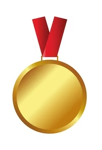

Équipe du Japon

| Médailles (depuis le début des JO) |
Or
 |
0 |
Argent
 |
0 |
Bronze
 |
0 |
| Meilleure place |
9ème |
| Numéro |
Nom |
Matchs joués |
Minutes jouées |
Contres |
Interceptions |
Passes |
Rebonds |
Points |
| 2 |
Yuki Togashi |
3 |
10.4 |
0 |
0 |
1.7 |
1 |
3.7 |
| 4 |
Akira Jaocobs |
3 |
5.8 |
0 |
0 |
0 |
1 |
0.7 |
| 5 |
Yuki Kawamura |
3 |
29.7 |
0.3 |
1 |
7.7 |
3.3 |
20.3 |
| 6 |
Makoto Hiejima |
3 |
13.6 |
0 |
0.7 |
2 |
2.7 |
3 |
| 7 |
Kai Toews |
2 |
2.9 |
0 |
0 |
0 |
0.5 |
0 |
| 8 |
Rui Hachimura |
2 |
32.2 |
0.5 |
0 |
1 |
6.5 |
22 |
| 12 |
Yuta Watanabe |
3 |
36.9 |
1.7 |
0.7 |
0.7 |
6.3 |
11.7 |
| 18 |
Yudai Baba |
3 |
9.9 |
0 |
0.7 |
0.3 |
0.7 |
3.7 |
| 24 |
Josh Hawkinson |
3 |
36.5 |
1.3 |
0.7 |
1.7 |
9.7 |
18.3 |
| 30 |
Keisei Tominaga |
3 |
2.6 |
0 |
0.3 |
0 |
0 |
0.7 |
| 34 |
Hugh Watanabe |
3 |
9.1 |
0.7 |
0 |
0.7 |
2.3 |
1.3 |
| 91 |
Hirotaka Yoshii |
3 |
30.6 |
0 |
0.3 |
1 |
3 |
5.7 |
Retour